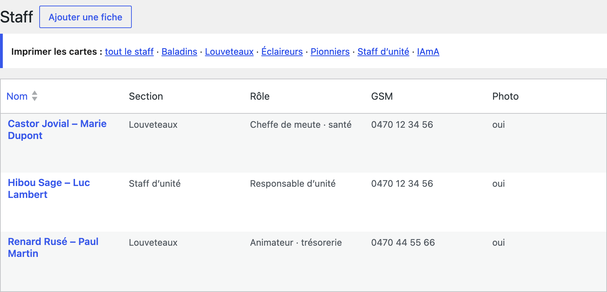
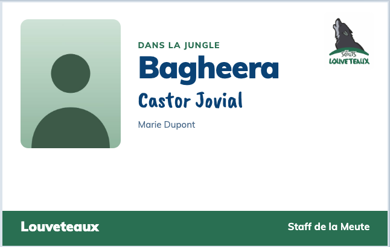
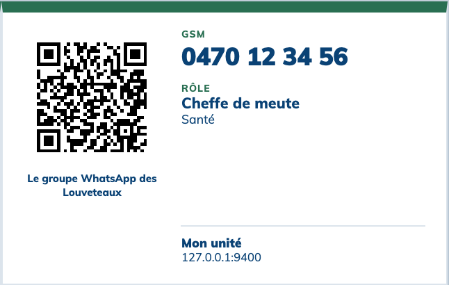

Une fiche par personne dans Staff → Ajouter : sections, staff d’unité, IAmA. Le prénom suffit pour commencer.

Imprimer les cartes, en haut de la liste : 10 cartes par feuille, recto puis verso.


Imprime en recto-verso, bord long, à 100 %. Essaie d’abord sur une feuille ordinaire.